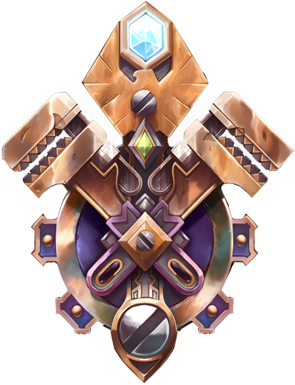

Гномы
Описание
Гномы - небольшой добродушный народ, обитающий под землёй. Во время Второй войны они строили
Описание: Гномы — это маленькая, жилистая раса мастеров, живущих под землей. Во время Второй войны они строили транспортные средства и гаджеты для Альянса — подводные лодки и летательные аппараты — для борьбы с Ордой. Они великие механики и изобретатели, и славятся своими знаниями и эксцентричными натурами. У гномов был город Гномреган, построенный в горе Стальгорн; но вторгшиеся трогги разрушили его и вырезали его жителей. Многие выжившие перебрались в Каз Модан и теперь живут с дварфами Стальгорна, а некоторые отправились со своими друзьями-дварфами в Калимдор. Гномы все еще не оправились от разрушения своего родного города и не хотят покидать безопасность дварфийских туннелей. Большинство гномов на Калимдоре остаются в уединении в Бейл Модане. Даже после уничтожения их расы и разрушения их города, гномы остаются дружелюбными и добросердечными. Они легко заводят и сохраняют друзей; другим трудно не любить гнома. Гномы живут долго и отечески относятся к другим расам, особенно к людям. Общество гномов организовано слабо. Большинство из них живут в Кхаз Модане и свободно общаются с гномами, отправляя представителей, чтобы поговорить с королем гномов от их имени. Те немногие гномы, которые приехали в Калимдор, живут таким же образом в Баэль Модане. Гномы - одаренные ремесленники. Они склонны к созданию радикальных технологий и инновационных проектов. Они часто работают вместе с гномами Стальгорна, разрабатывая чертежи и концепции, из которых кузнецы-гномы черпают свое вдохновение.
Description: Gnomes are a diminutive, wiry race of tinkers who live underground. In the Second War, they built vehicles and gadgets for the Alliance — submarines and fl ying machines — to combat the Horde. They are great mechanics and inventors, and are renowned for their knowledge and eccentric natures. The gnomes had a city, Gnomeregan, built into Ironforge Mountain; but invading troggs destroyed it and slaughtered its citizens. Many survivors moved into Khaz Modan and now live with the Ironforge dwarves, and a few traveled with their dwarven friends to Kalimdor. The gnomes are still reeling from the destruction of their home city and are loath to leave the safety of the dwarven tunnels. Most gnomes on Kalimdor remain secluded in Bael Modan. Even after the decimation of their race and the destruction of their city, gnomes are an amiable and kindhearted lot. They make and keep friends easily; others fi nd disliking a gnome to be diffi cult. Gnomes are long-lived and take a fatherly approach to other races, particularly humans. Gnome society is loosely organized. Most live in Khaz Modan and mix freely with the dwarves, sending representatives to speak to the dwarven king on their behalf. Those few gnomes who traveled to Kalimdor live in a similar fashion in Bael Modan. Gnomes are gifted tinkers. They have a penchant for creating radical technology and innovative designs. They oftenwork together with Ironforge dwarves, developing the blueprints and concepts from which the dwarf smiths draw their inspiration.
Внешность
Регион
Принадлежность
Вера
Имена
Мужские имена
Женские имена
Фамилии

Appearance: Gnomes are small and slight. They somewhat resemble dwarves, but are shorter and not as stocky. They have large noses and ruddy skin. Their hair ranges from white to blond to brown to black. Their ears are large and rounded, and they are often seen with goggles, tool belts and other items related to their technological inclinations. Region: Dun Morogh. Most gnomes still live in Khaz Modan in the dwarven kingdom, safe from the Scourge. Those who traveled to Kalimdor live in Bael Modan, and a few live in Theramore. Affi liation: Alliance. Gnomes are great friends of the Ironforge dwarves and have fought and died alongside human soldiers. They are wary of the high elves, but so is everyone else, so they don’t feel too bad about that. They battled the Horde in the Second War and have a bit of a grudge against orcs, but gnomes are a kindly and forgiving lot and are willing to give the orcs a second chance. Gnomes and goblins have always been rivals — though whether this rivalry is friendly or brutal depends on the individuals involved. Gnomes have not been on Kalimdor long enough to form proper opinions about its denizens. Tauren and night elves both seem rather rustic for gnome sensibilities — but they can make friends with anyone. Faith: Gnomes place their loyalty in themselves, in their friends and in their inventions. A few follow a loftier path and pay their respects to the Holy Light. Since the Ironforge dwarves’ recent discovery of their Titanic origins, the gnomes think that they too may be products of the Titans. This fact is very uncertain, however; if it is true, the gnomes as yet remain estranged from their ancestral powers. Names: Gnome parents name their children at birth. Gnomes have family names that represent an honored ancestor’s achievements, but they only keep these names until some time in their 30s. At this point, gnome society expects them to have made their own achievements, and thus the gnome invents a new name that represents his own accomplishments. This name then takes the place of his family name. • Male Names: Grobnick, Kazbo, Hagin, Snoonose. • Female Names: Beggra, Nefti, Sorassa, Gamash. • Family Names: Spinpistol, Airslicer, Bombtosser, Greatgear.